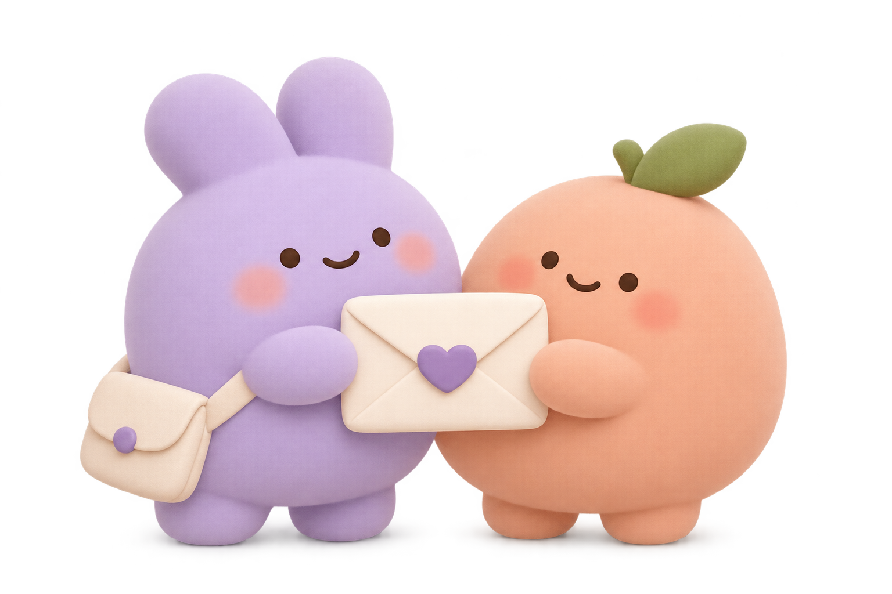

나의 취향은?
아홉 번 고르고, 우리 반 친구와 몇 칸 다른지 알아봐요.

학생 참여
선생님
방 코드를 학생에게 알려 주세요.
나의 취향은?
1 / 9민트초코는?
내 취향표
나의 취향은?
방 코드
제출 현황
참가 0명제출 0명미제출 0명
미제출자 보기
내 취향표
다 골랐어!
친구들도 고르고 있어요.
잠시 뒤에 함께 비교해요.
우리 반 해밍 거리 분포
- 비교한 쌍
- 평균 거리
- 가장 많은 거리
해밍 거리 (다른 칸 수) · 막대를 눌러 비율 보기
비교할 친구 바꾸기 ↑이 문항에서 몇 쌍이 달랐을까?
서로 다른 선택을 한 두 사람의 해밍 거리에 이 문항이 1을 더해요.